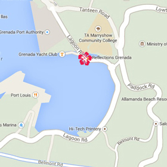

Based in the beautiful Caribbean island of Grenada, Reflections Grenada offers a range of handmade linens and home décor accessories. Our exquisite natural fabrics are embellished with vibrant colours and artwork unique to Grenada.
Stop by and visit us. Our shop is conveniently located in the Grenada Craft Center on Kirani James Boulevard in St. George's.
Click on the map below for our Google Maps location.
Grenada Craft Center
Kirani James Blvd (Lagoon Road)
St. George's, Grenada
The country of Grenada is actually made up of three separate islands: Grenada, Carriacou and Petite Martinique. Grenada is 133 sq miles of lush rainforest and crystal-clear beaches and is home to 90,000 of the warmest, friendliest people you’ll ever meet.
Known around the globe as the The Isle of Spice, Grenada is the world’s second largest producer of nutmegs and the intoxicating scents of cinnamon, cloves, allspice, aniseed and yes – nutmeg – are heady in the air.
Find out more about beautiful Grenada at GrenadaGrenadines.com
Call us at +473 415-9872, email at reflections@red.gd and don't forget to follow us on social media:


© Copyright 2014 Reflections Grenada
Website designed by RED Studio